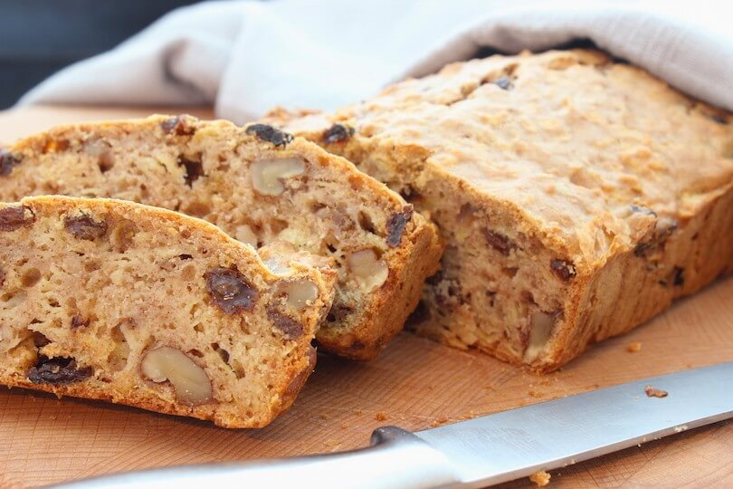

Gerechten uit eigen keuken
Varkensfricandeau met groente en rijst
Ingrediënten voor 4 personen:
- Ca. 600 gr. scharrelvarkens-fricandeau aan één stuk.
- 200 gram zilvervliesrijst.
- Grote ui
- 2 winterwortelen
- 500 gram Broccoli
- Verse salie, rozemarijn en peterselie.
Roer in een kom de olie, ½ eetlepel citroensap en satékruiden door elkaar. Dep de fricandeau met keukenpapier droog, bestrijk het vlees met de satémarinade en laat het vlees ca. 1 uur marineren. Lees Meer..
Verse courgettesoep
"Deze heerlijke romige courgettesoep zet je in een handomdraai op tafel". Ingrediënten
- 2 uien
- 2 preien
- 100 ml room
- 1 halve venkelknol
- 3 courgettes, bij voorkeur zowel groene als gele
- Verse dille
Appel notencake
Ingrediënten
"Deze heerlijke romige courgettesoep zet je in een handomdraai op tafel".
- 250 gr. roomboter
- 300 gr. bloem
- Bakpoeder
- 100 gr. kristalsuiker
- 100 gr. rietsuiker
- 5 eieren
- 0,5 dl. melk
- Fris-zure appels
- Beetje citroensap
- Walnoten
- Kaneel
